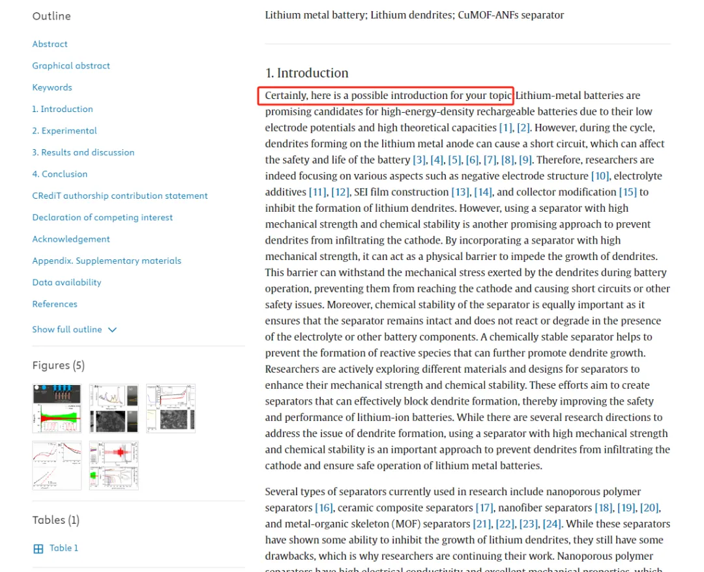

AI写SCI论文的抓包现场
原文：https://mp.weixin.qq.com/s?__biz=MzAwMzIzOTk5OQ==&mid=2247509095&idx=1&sn=4eef4c7d9b62058718f153fa33a2a5f2&chksm=9b3cdd37ac4b5421f20fae9a11d6e7fe98f4b4775fb668b969665443b035b5b5bfdcc9e1afde#rd 合集：漫谈胡侃
有点幽默了，明显把AI模型返回的画外音也粘贴过来了。但凡作者、导师、审稿人、编辑有一个干好自己的本职工作，也不至于。。。。。。。。

原文链接：
https://doi.org/10.1016/j.surfin.2024.104081.